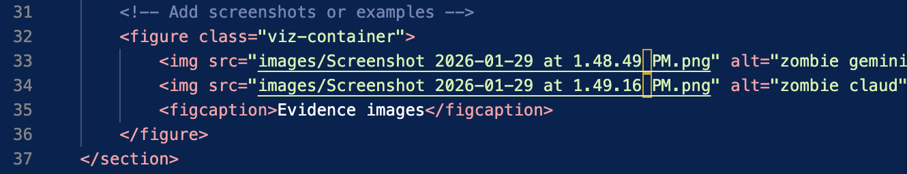

Visualization

Source: Data of Art
Critique
Information Resolution
Edward Trufte really is a simple man with a simple concept. Don’t let design get in the way of the true story. If you’ve done the work and the research, you don’t need “chart junk” that clutters the data. I chose to analyze the “Flood necklace”, a project done by Anne-Laure Fréant. This is a ceramic data sculpture representing the water heights of the Loire River in Orléans from 1800 to 2003, with each sphere corresponding to a recorded flood. The spheres are made of clay that is local from Loire Valley. The two white spheres are the largest two compares to the others in red. These two are made of commercial white stoneware, representing the largest floods of 1856 and 1866. These floods stood out in such a way that they influence national land management policies and subsequent flood heights. The ceramic spheres are arranged chronologically into the necklace to embed historical data into a tangible and visual form that is unique to a map. Anne-Laure’s exploration was focused of transforming data from a historical record, into a work of art that has scale, pattern, and historical context.